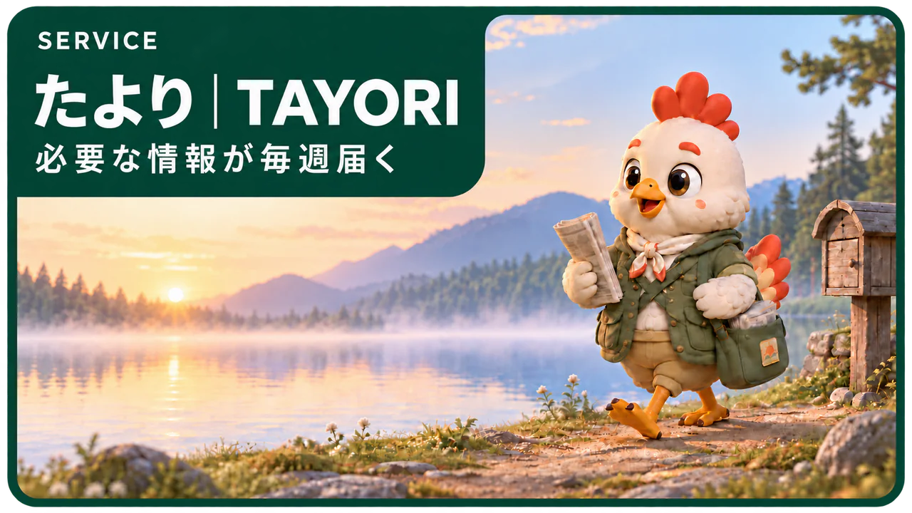
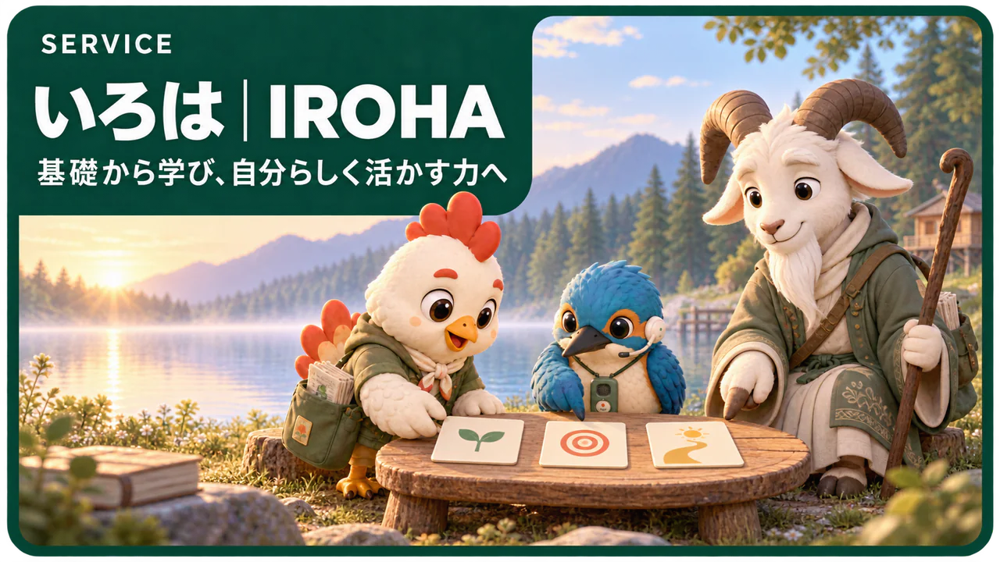

DELIVERたより｜TAYORI
情報を整える。毎日AIニュースを追わなくても、知っておきたい変化を毎週整理して受け取れるAI情報サービスです。
たよりを見るSERVICE
医療・介護・産業保健の専門職へ。AIを仕事に活かす学びと実践を届けます。
START POINT
有料の情報サービスから、組織の学びと実践を支える支援へ。現在は「たより」のサービス案内をご覧いただけます。

DELIVER毎日AIニュースを追わなくても、知っておきたい変化を毎週整理して受け取れるAI情報サービスです。
たよりを見る
準備中AIを体系的に学び、実践につなげる学習サービス。
公開に向けて準備しています組織の学びと実践を支える法人向け研修。
公開に向けて準備しています仕事や日々の実践を支えるプロダクト。
公開に向けて準備しています